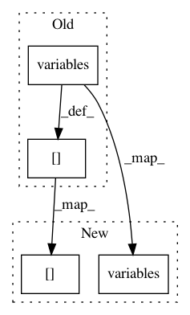

31fd5e11806c319b493b47fe029a48811445d9e8,niftynet/engine/application_driver.py,ApplicationDriver,_inference_loop,#ApplicationDriver#,279
Before Change
if self._coord.should_stop():
break
vars_to_run = dict()
vars_to_run[NETORK_OUTPUT] = \
self.outputs_collector.variables(collection=NETORK_OUTPUT)
vars_to_run[CONSOLE] = \
self.outputs_collector.variables(collection=CONSOLE)
graph_output = sess.run(vars_to_run)
if not self.app.interpret_output(graph_output[NETORK_OUTPUT]):
After Change
// build variables to run
vars_to_run = dict()
vars_to_run[NETORK_OUTPUT], vars_to_run[CONSOLE] = \
self.outputs_collector.variables(NETORK_OUTPUT), \
self.outputs_collector.variables(CONSOLE)
// evaluate the graph variables
In pattern: SUPERPATTERN
Frequency: 4
Non-data size: 4
Instances
Project Name: NifTK/NiftyNet
Commit Name: 31fd5e11806c319b493b47fe029a48811445d9e8
Time: 2017-08-24
Author: wenqi.li@ucl.ac.uk
File Name: niftynet/engine/application_driver.py
Class Name: ApplicationDriver
Method Name: _inference_loop
Project Name: NifTK/NiftyNet
Commit Name: 31fd5e11806c319b493b47fe029a48811445d9e8
Time: 2017-08-24
Author: wenqi.li@ucl.ac.uk
File Name: niftynet/engine/application_driver.py
Class Name: ApplicationDriver
Method Name: _training_loop